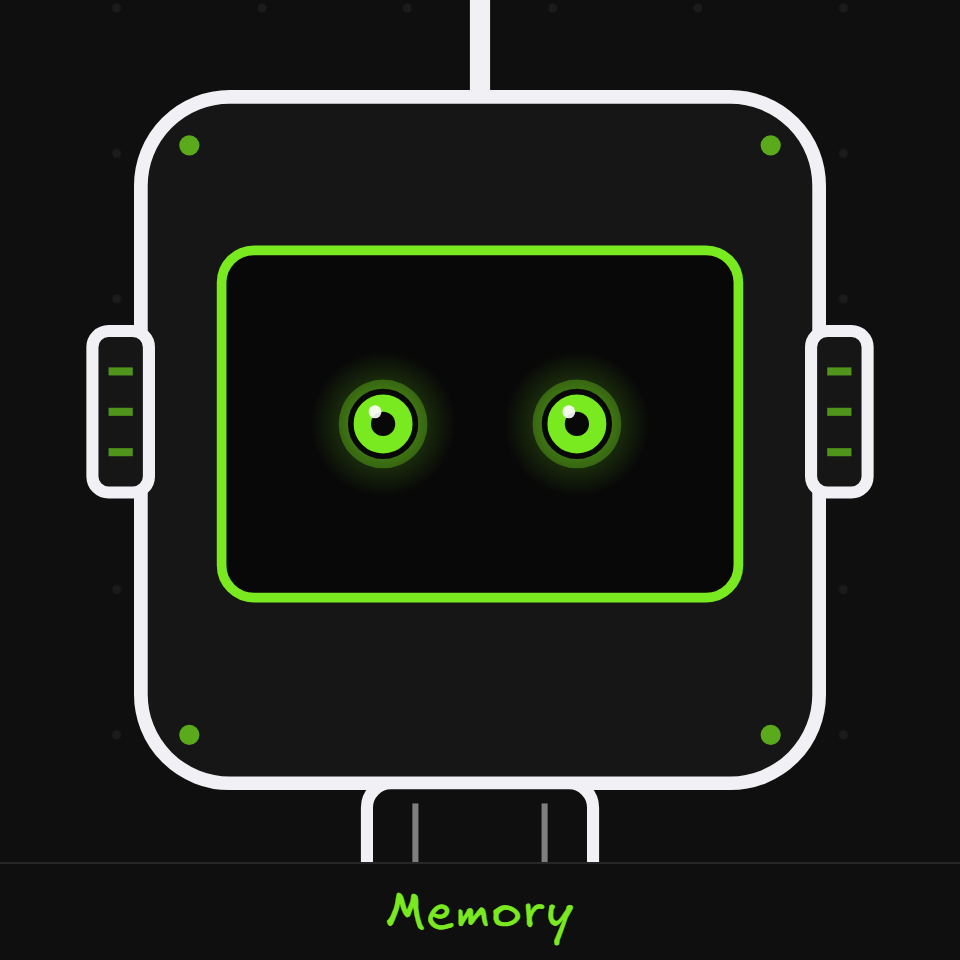
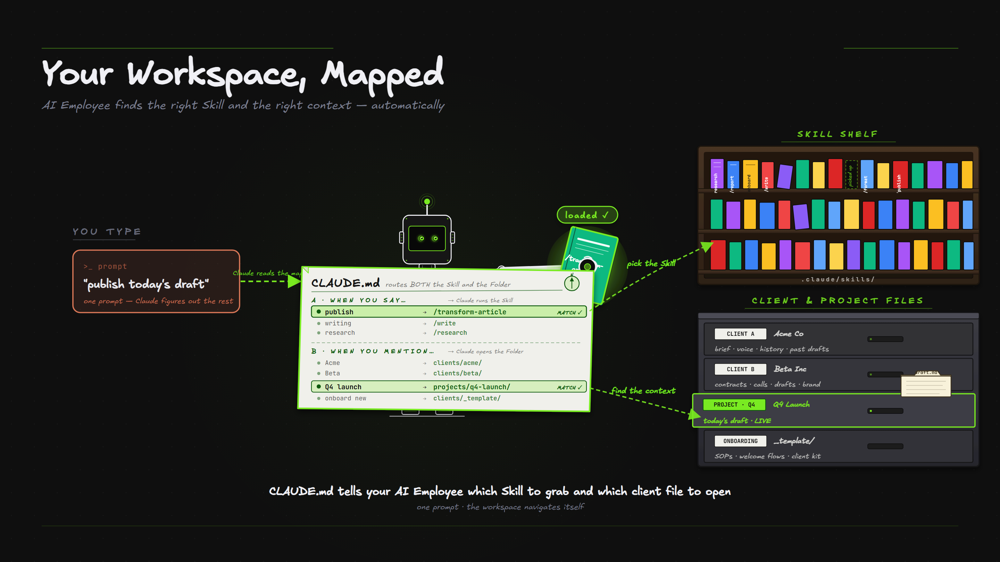
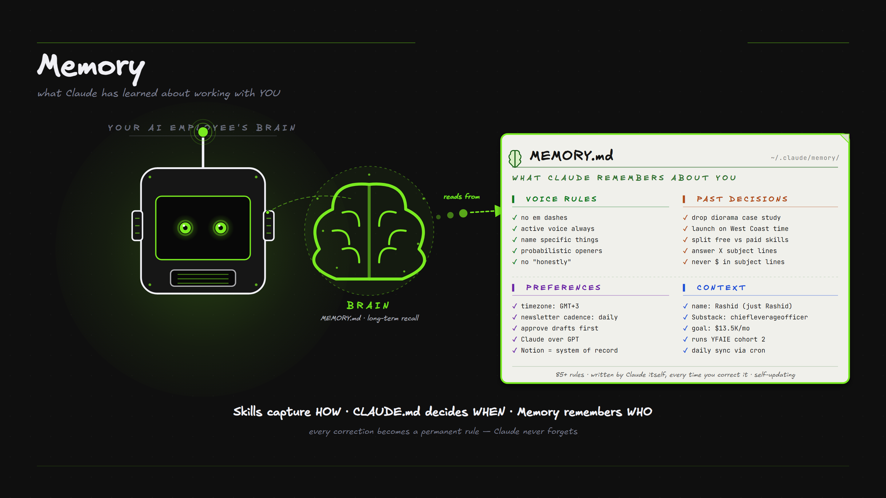

A new hire who forgets everything overnight is useless. Memory is what makes Claude Code feel like someone who already knows your business. It lives in a couple of plain text files that you control.

What it is. CLAUDE.md is the first thing Claude reads every session. The rule of thumb, if something isn't in here, your AI doesn't know it exists.
It does three jobs. Routing tells it which skill to use for what. Where things live is the map of your folders. And Rules are your conventions, like "run tests before committing" or "follow the brand voice".

/init to generate one, or /memory to edit it anytime.What it is. Alongside CLAUDE.md, Claude keeps a memory of things it learns as you work. Your voice rules, past decisions, your preferences, and context about how you operate. You just tell it, and it sticks.

Why it matters. Skills capture HOW, CLAUDE.md decides WHEN, and memory remembers WHO.
Remember that we always use dark mode for demos and never use hype words.
Or just say: "remember that…"
What it is. Memory comes in layers, from broad to specific, and the more specific one always wins.
Project memory is the team-shared .claude/CLAUDE.md. Then your personal memory at ~/.claude/CLAUDE.md covers all your projects. Then local notes for just this project. And auto-memory is what Claude learns over time.
Instead of one giant CLAUDE.md, you can split rules into topic files in .claude/rules/ (for example code-style.md, testing.md, brand-voice.md) and they all load automatically.
And CLAUDE.md can pull in other files with an @path/to/file import, so it stays short while still giving Claude everything.
What it is. Everything Claude can see right now is its context window, its working memory. At the start of a session it loads the small stuff, CLAUDE.md, the list of skill names, connection tools, and recent auto-memory. The heavy stuff, a full skill or a reference file, only loads when it's actually needed.
Why it matters. That's why skills are kept short and load their detail on demand, so the window stays clean and Claude never runs out of room mid-task. If it ever gets close to full, it tidies itself up automatically.
CLAUDE.md survives the auto-tidy. Skills load on demand. Sub-agents get their own separate memory (that's the next module). And hooks cost zero of this space.
A good habit, run /clear between unrelated jobs so one task's clutter doesn't bleed into the next.